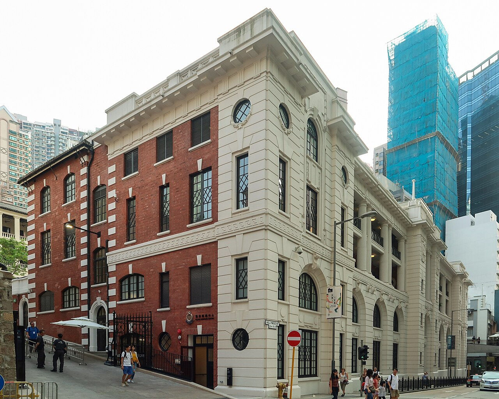
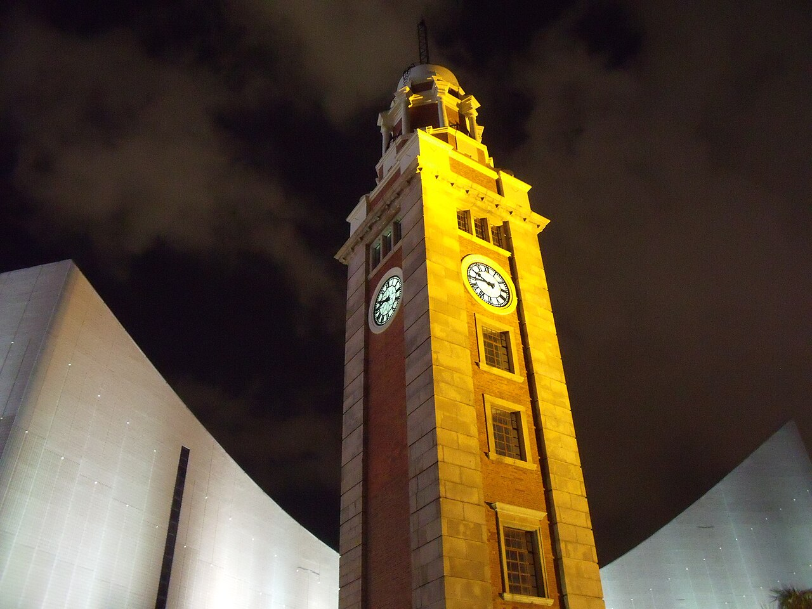
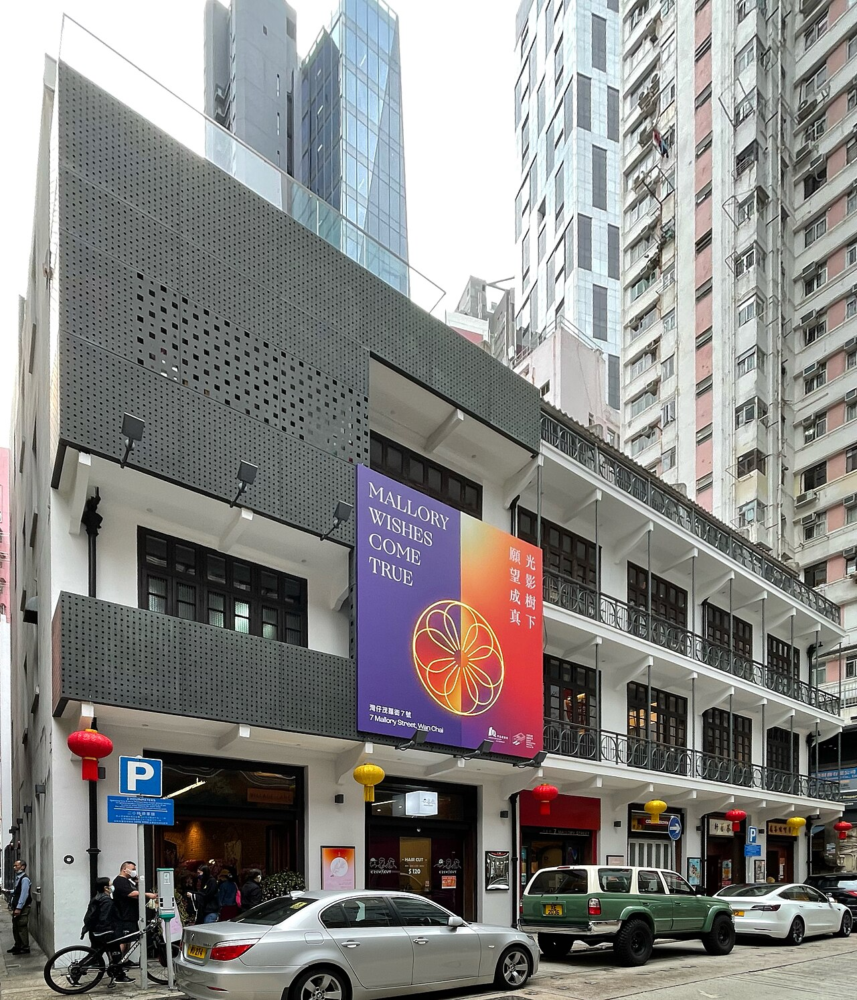
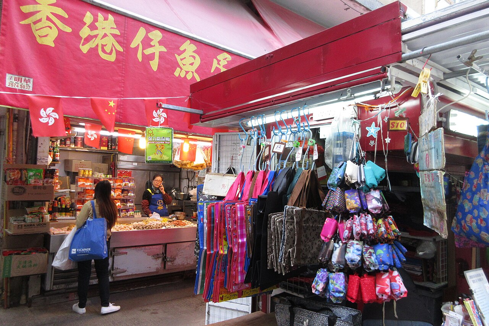
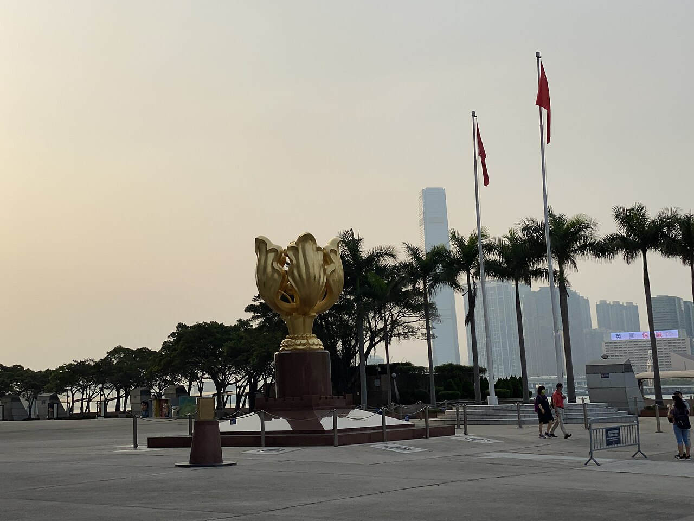
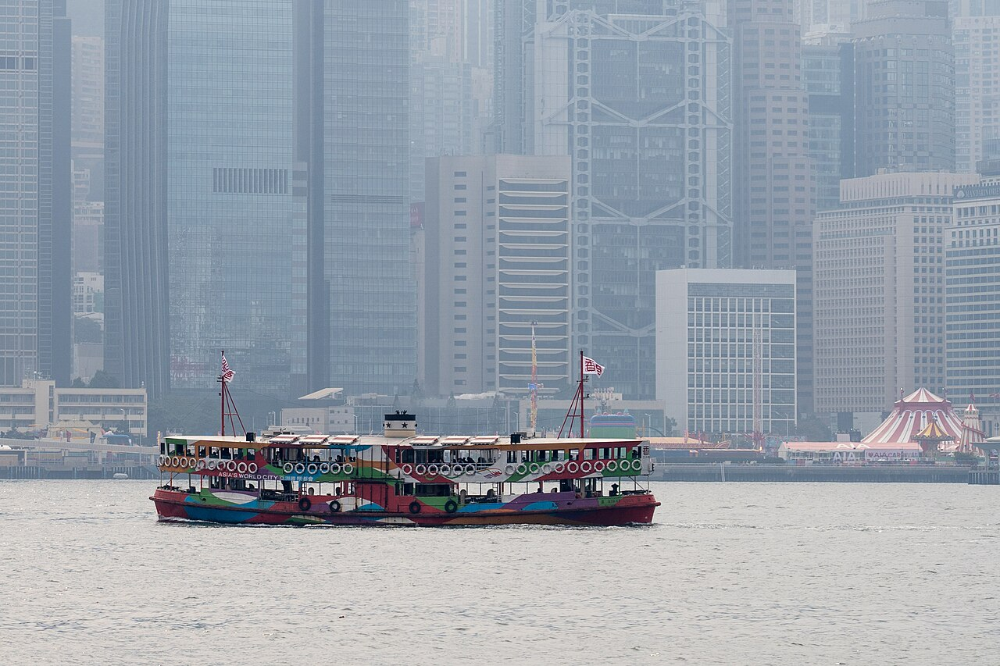
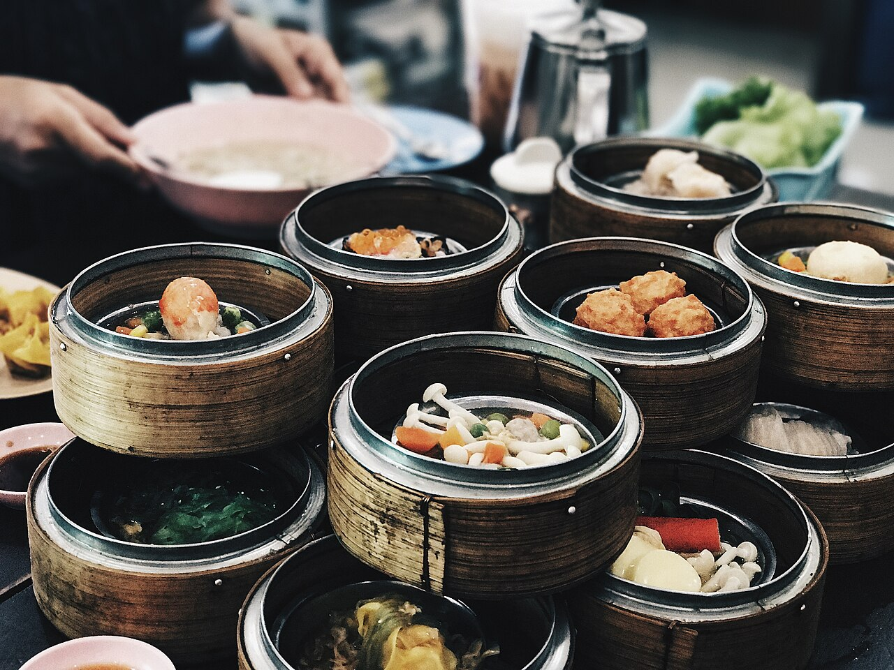
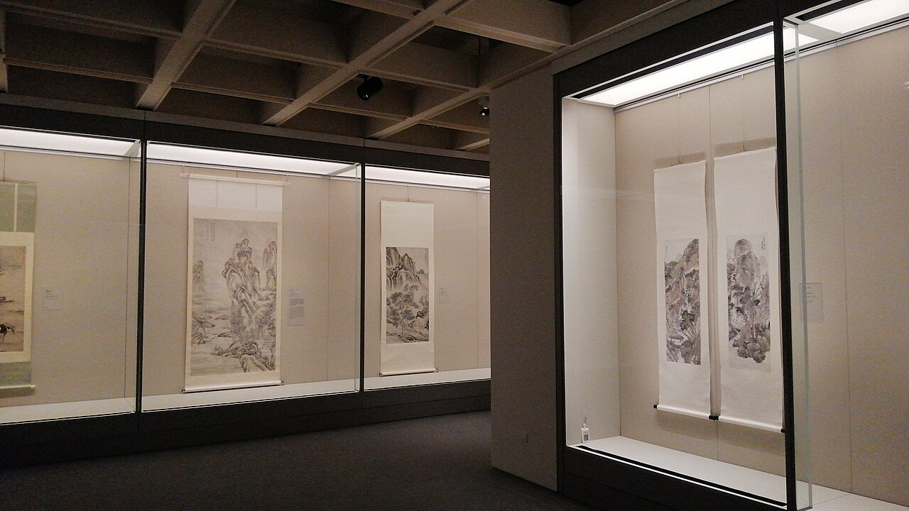
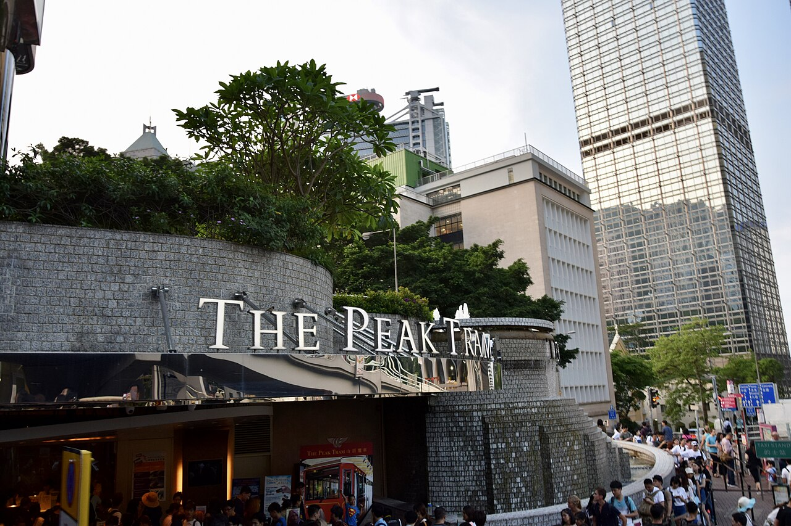

Hong Kong is a compact city of contrasts: dense street markets and glass towers, quiet temples and harbourfront promenades, all connected by one of the world's best transport networks. The meeting venue in Wan Chai puts delegates within walking distance of the waterfront, the Star Ferry and some of the city's oldest neighbourhoods, with museums, galleries and country parks a short ride away.
Late October is usually mild and dry, with temperatures around 24–28°C and lower humidity than summer. It is a good time to walk, take the tram and spend an evening on the harbour. Bring a light layer for air-conditioned rooms and a compact umbrella for the occasional shower.
Use the official Discover Hong Kong guides below for opening hours, tickets and what's on, or start with the neighbourhoods and short itineraries on this page. Most attractions are reachable by MTR, tram, bus or ferry; an Octopus card or contactless bank card covers almost everything.
The meeting district: wet markets, local restaurants, temples and the waterfront. The Blue House cluster, Tai Yuen Street market and the M7 heritage block at 7 Mallory Street are a short walk from the hotel. See the Wan Chai neighbourhood guide.

Central and Sheung Wan
Colonial architecture, Tai Kwun, PMQ, antique streets and the Mid-Levels escalator. Good for a half-day walk followed by dinner. See Hong Kong Island neighbourhoods.

Tsim Sha Tsui
Museums, the Star Ferry, Nathan Road and the waterfront promenade. Best in the late afternoon and evening. See Kowloon neighbourhoods.
Victoria Harbour
The Star Ferry between Central or Wan Chai and Tsim Sha Tsui is the best-value harbour crossing. The Tsim Sha Tsui promenade and the Wan Chai harbourfront are good for skyline views, especially around sunset. See Harbour and skyline.
Wan Chai highlights

M7, 7 Mallory Street
A restored block of 1910s tenement houses, now a community hub with shops, food and public space. A short walk from the hotel.

Wan Chai Market
Street stalls, fresh produce and everyday essentials around Tai Yuen Street. Good for an early-morning walk and photos. See the Wan Chai Market guide.

Harbourfront and Golden Bauhinia Square
The Wan Chai promenade, HKCEC, Golden Bauhinia Square and HarbourChill are 10–15 minutes from the hotel. The Wan Chai Ferry Pier has a public observation deck. See the Harbourfront guide.

Star Ferry from Wan Chai
The green-and-white Star Ferry crosses to Tsim Sha Tsui in about 11 minutes. Pay by Octopus or token; the pier is next to the HKCEC. See Star Ferry information.
Food
Hong Kong is a city for eating at every price. Try dim sum in the morning, roast meats at lunch, and dai pai dong or noodle shops in the evening. Wan Chai and Causeway Bay have strong local options; Central and Sheung Wan have a wider international range. Book popular restaurants ahead, especially at weekends. See the Discover Hong Kong food and drink guide.

Getting around
MTR: the fastest way across the harbour and around the city. Use an Octopus card or contactless bank card. The Transport Department's HKeMobility app plans journeys across MTR, buses, trams, ferries and taxis.
Star Ferry: the scenic crossing between Tsim Sha Tsui and Central or Wan Chai. The Wan Chai pier is beside the HKCEC; the crossing takes about 11 minutes. Pay by Octopus or token.
Tram: the Ding Ding is slow, cheap and excellent for seeing the older city. It runs along the north of Hong Kong Island through Wan Chai and Causeway Bay.
Buses and minibuses: double-decker buses cover the city; green minibuses run fixed routes. Use Octopus or contactless payment where accepted.
Taxi: metered, plentiful and useful at night or in the rain. Have the destination in Chinese if possible; red urban taxis serve Hong Kong Island.
Octopus: a physical or mobile Octopus works on transport, shops and restaurants. Tourist Octopus cards are available at the airport and visitor centres.
Walking: the best way to see Wan Chai, Central and the waterfront. Bring water and use covered walkways in the heat.
Blue House, Tai Yuen Street market, lunch at a cha chaan teng, then the waterfront and Golden Bauhinia Square.

One day: harbour and Kowloon
Star Ferry to Tsim Sha Tsui, Hong Kong Museum of Art or M+, lunch in Kowloon, then return via the Star Ferry or the promenade for harbour views.

Evening: Peak and Central
Peak Tram before sunset, harbour views, then dinner in Central or Sheung Wan. Book the Peak Tram online to avoid queues.
What's on
Check the official Discover Hong Kong events calendar for exhibitions, festivals, concerts and seasonal highlights during your stay. The calendar is updated by the Hong Kong Tourism Board. See the Events calendar and Festival highlights.
Practical notes
Carry an Octopus card or a contactless bank card for transport and small purchases.
Many museums close on Mondays; check opening hours before travelling.
Typhoon and rainstorm signals can affect transport. Follow the Hong Kong Observatory and venue announcements.
Tipping is not expected, though service charges are common in restaurants.